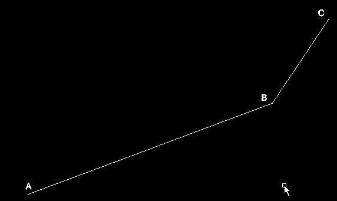
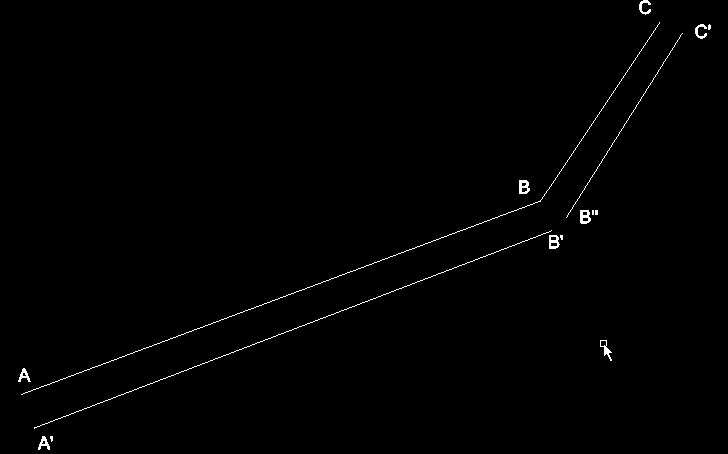
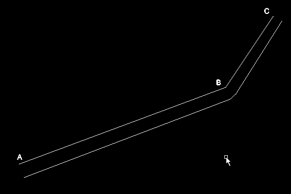
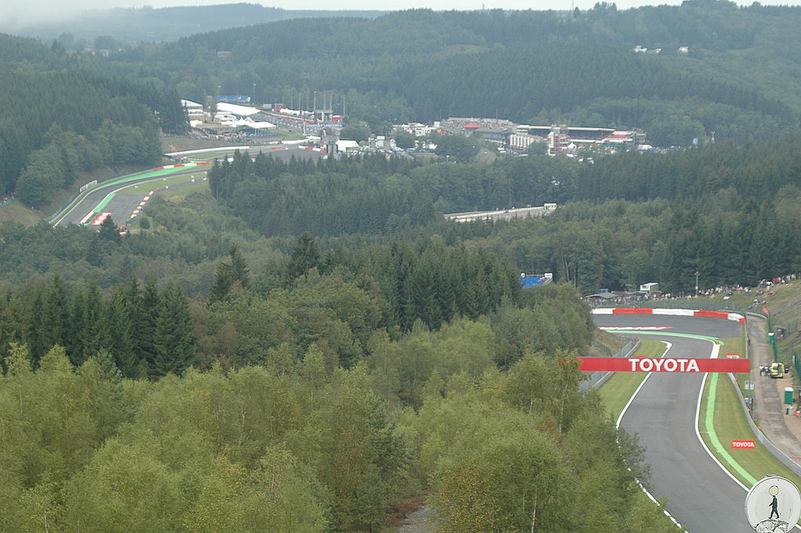
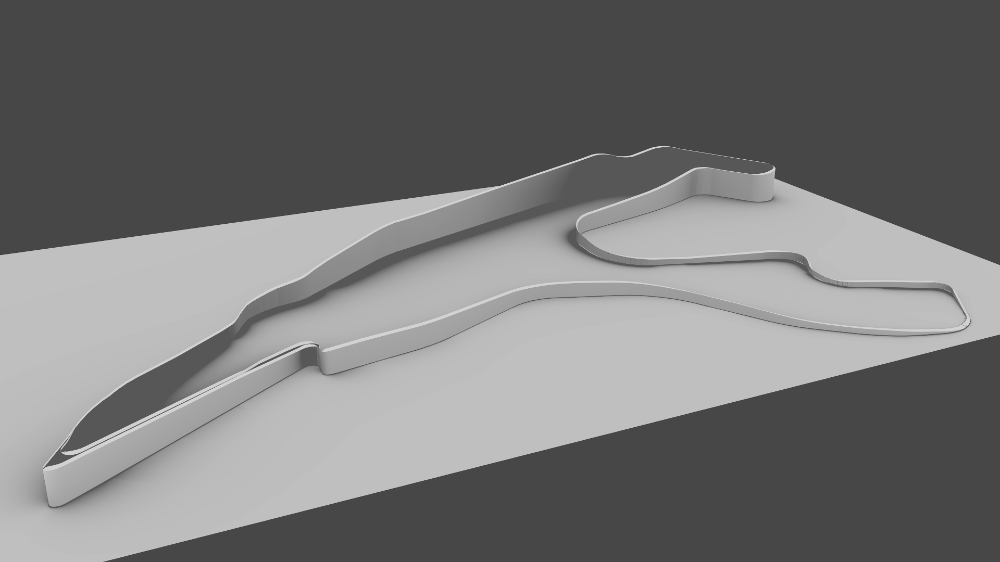

Creating models of F1 tracks in Rust - Part 2
DISLAIMER: Compiled with rustc version 0.12.0-pre-nightly (commit 01ec6fab2). Whether it works with later versions is anyone’s guess. I’m only a beginner to Rust so do not think that I know what I’m doing or that my code is idomatic. :)
Last time we wrote a library in Rust to read Open Street Maps files into Rust and got the latitude and longitude of all points on the track. Now we’ll get on with actually creating a model of the track. Reading the last post isn’t required however it may be useful to read the last section of the post because we will use that code in this one.
Getting the elevation data
Our first job today is to get the elevation data for the track. In this case I have decided to use the Google Elevation API just because it’s really easy to call. You pass a number of latitude/longitude points as GET parameters and it will send you the elevation in meters as JSON.
The only problem with this API is that URLs are limited to around 2000 characters so we can’t send all the locations at once. I worked out by trial and error we can send about 100 points before we break that limit.
// top of src/main.rs
use std::os;
fn get_heights(latlngs: &Vec<(f64, f64)>) -> Vec<f64> {
let api: String = os::getenv("GAPI").expect("Please set GAPI");
let mut heights = Vec::new();
for chunk in latlngs.as_slice().chunks(100) {
heights.push_all(get_heights_request(&api, chunk).as_slice());
}
heights
}We pass a vector of points in as a reference. The reason we use a reference here is because otherwise the vector would “move”. In Rust a resource has one owner. If the resource is passed to a function that transfers to that function. When the resource’s owner dies (eg. a function ending) the resource is destroyed and so it cannot be used anymore. Using a reference allows us to have a look at the resource but not own it - we “borrow” it in Rust speak. Unfortunately I glossed over this in the previous blog post so apologies. If this doesn’t make sense then Rust by Example may help.
First we try to get the environment variable “GAPI”. getenv returns an Option. We use the expect function on it. expect is like unwrap except that if there is no value to unwrap it will fail with the error message you provided.
We turn the vector into a slice (a reference to a number of values) and call chunks. chunks(100) creates an iterator which gives slices of length 100 from the slice it was called on. We then pass it to get_heights_request.
So how do we do a web request it Rust? Well, as I write this, there is only one nice way to do it and that is with a library called rust-http. This library is going to be replaced in the future but whilst the new library is being written rust-http is still maintained.
Let’s add a couple of dependencies to Cargo.toml:
[dependencies.url]
git = "https://github.com/servo/rust-url"
[dependencies.http]
git = "https://github.com/chris-morgan/rust-http"And now we can write get_heights_request:
fn get_heights_request(api: &String, latlngs: &[(f64, f64)]) -> Vec<f64> {
let mut heights = Vec::new();
let s: Vec<String> = latlngs.iter()
.map(|&(lat,lng)| format!("{},{}", lat, lng))
.collect();
let url = Url::parse(format!(
"https://maps.googleapis.com/maps/api/elevation/json?key={}&locations={}",
api,
s.connect("|")).as_slice()).unwrap();
let request: RequestWriter = RequestWriter::new(Get, url).unwrap();
let mut response = match request.read_response() {
Ok(r) => r,
Err(e) => fail!("Could not read response")
};
let body = response.read_to_end().unwrap();
let s = str::from_utf8(body.as_slice()).expect("body from_utf8");
let json: json::Json = json::from_str(s).unwrap();
for res in json.find(&"results".to_string()).unwrap().as_list().unwrap().iter() {
heights.push(res.find(&"elevation".to_string()).unwrap().as_number().unwrap());
}
heights
}As far as I know there’s no library to handle encoding GET parameters so we will have to build the URL ourselves. For each point we separate the latitude and longitude by a comma. We separate each point with a pipe using connect which is similar to Python’s join only connect is called on the collection, not on the separating string.
After getting the response back we have to pick apart the JSON. Rust has the ability to automatically create methods for decoding JSON into a structure but I thought this would be overkill in my case. The reason for this is I think I would need two structs - a struct for the top level object which has a “results” value and a “status” value. The “results” is an array of objects that have an “elevation”. Having two structs with a couple of members each seemed like a bit of a waste.
The code looks up the results array. Json is an enum and so could be a list or an object or a number or whatever else we need to get the value as a list before we can do anything with it. We go through each value and push the elevation value onto a vector. Originally I was going to use a hash map with the latitude and longitude as the key so we could look up the elevation of the point we wanted. Luckily Google returns the elevations in order so we can just use the index of the current point to find the elevation. This is a pretty brittle, stupid and generally nasty approach but if a job’s worth doing, it’s worth under-doing, right?
We can test this code fairly easily. If you replace main with this:
fn main() {
let latlngs = vec!((32.23, -1.121), (43.23, 12.1));
println!("{}", get_heights(&latlngs));
}Hopefully it’ll all compile and give you two heights in metres when you run it.
The model format
We’re going to output the model as a Wavefront file. It’s a really simple format which is nice. We can have vertices:
v 10 10 10
v 20 10 10
v 10 15 10And we could join these up to create a triangle using a face:
f 1 2 3or
f -1 -2 -3A face can have three or more vertices and the vertices are specified as line numbers. To make things super easy they can be negative numbers from the current line as well.
To keep the main file tidy let’s put our representation of the Wavefront format in another file. Put the following into src/lib.rs:
#[deriving(Show)]
pub enum WavefrontValue {
Vertex(f64, f64, f64),
Face(Vec<int>)
}
impl WavefrontValue {
pub fn to_string(&self) -> String {
match *self {
Vertex(x, y, z) => format!("v {} {} {}", x, y, z),
Face(ref locs) => {
let locs: Vec<String> = locs.iter().map(|v| v.to_string()).collect();
format!("f {}", locs.connect(" "))
}
}
}
}A Wavefront value can either be a vertex or a face so we use an enum. Just like structs we can define methods on enums and so we create a to_string method to turn a value into a string. Vertex is pretty easy. For a Face we have to turn each number into a string. We then use connect again to separate them by a space. Notice the ref keyword. If you omit it you will get a compilation error. ref means locs will contain a reference to the value. We have to do this because otherwise we would take ownership of the value which doesn’t work as we don’t have ownership of the WavefrontValue.
Note the #[deriving(Show)]. This line tells the Rust compiler to implement the methods needed to show the enum. This should be familiar to you if you’ve used Haskell before.
#[deriving(Show)]
pub struct Wavefront {
pub values: Vec<WavefrontValue>
}
impl Wavefront {
pub fn new() -> Wavefront {
Wavefront {values: Vec::new()}
}
pub fn to_string(&self) -> String {
let vals: Vec<String> = self.values.iter().map(|v| v.to_string()).collect();
vals.connect("\n")
}
pub fn add_vertex(&mut self, x: f64, y: f64, z: f64) {
self.values.push(Vertex(x, y, z));
}
pub fn add_face(&mut self, vec: Vec<int>) {
self.values.push(Face(vec));
}
}Everything else is pretty straight forward. To turn a Wavefront struct into a string we just need to turn each WavefrontValue into a string and separate them by newlines. We supply two methods to make adding values a bit easier.
Before we can use it we need to add the following lines to the top of src/main,rs:
extern crate osmmodels;
use osmmodels::Wavefront;Turning points into coordinates
Before we get to outputing the model I’m going to scale the latitude and longitude points a bit. The reason for this is primarily so that the height of the model is to the same scale as the width. It would look weird if the elevation had a scale of 1px per 1m and the x and y coordinates had a scale of 10px per 1m! The other reason is that the latitude and the longitudes don’t change that much and so if we used them as is the model would be pretty small and diffcult to find. I mean, I could just learn how to use Blender properly and zoom in a bit but where’s the fun in that?
Before we crack on with the code there is one last dependency to add:
[dependencies.cgmath]
git = "https://github.com/bjz/cgmath-rs"I’m going to ditch the tuples I used to represent points and start using vectors from a maths library. This will become useful later on! Let’s include the library:
extern crate cgmath;
use cgmath::{Vector3, EuclideanVector, Vector};We include Vector3 which is a type and EuclideanVector and Vector which are traits. Traits are similar to Java interfaces. A trait defines a number of functions and for something to implement a trait it much implement these functions. Iterator is a trait which defines a method next. Similarly Show is a trait.
I’m going to create a type alias for Vector3 to save myself some typing:
type V3 = Vector3<f64>;And now to the actual scaling. I want to give a function a size and a Vec of numbers and I want back the biggest number which we can then multiply each number by and the result does not exceed the given size.
fn scale(points: &Vec<f64>, size: int) -> (f64, f64) {
let mut points = points.clone();
points.sort_by(|a, b| a.partial_cmp(b).unwrap_or(Equal));
let min = points[0];
let max = points.last().unwrap();
((size as f64) / (max - min), min)
}The code is pretty nasty unfortunately. There are two traits which deal with comparing values - PartialOrd and Ord. f64 only implements PartialOrd which means we can’t use maximum and minimum functions (you can read more here). To get around this we sort the points instead and get the first and last elements. unwrap_or is like unwrap but it will return the value it’s given if the unwrap fails. scale returns the scale and the minimum value it found. The minimum is needed as we take that away from each value before we multiply them so that the smallest number ends up being 0.
fn latlngs_to_coords(ways: Vec<Vec<(f64, f64)>>, size: int) -> (Vec<Vec<V3>>, f64) {
let mut coords = Vec::new();
let flat = ways.as_slice().concat_vec();
let mtrs: Vec<(f64, f64)> =
flat.iter()
.map(|&(lat, lng)| latlng_to_metres(lat, lng)).collect();
let heights = get_heights(&flat);
let (_, min_h) = scale(&heights, 5);
let xs = mtrs.iter().map(|&(x, _)| x).collect();
let ys = mtrs.iter().map(|&(_, y)| y).collect();
let (sx, min_x) = scale(&xs, size);
let (sy, min_y) = scale(&ys, size);
let s = if sx < sy {sx} else {sy};
let mut i = 0;
for latlngs in ways.iter() {
let mut way = Vec::new();
for &(lat, lng) in latlngs.iter() {
let (x, y) = latlng_to_metres(lat, lng);
way.push(Vector3::new((x - min_x) * s,
(heights[i] - min_h) * s,
(y - min_y) * s));
i += 1
}
coords.push(way);
}
(coords, s)
}As I said in the last post we need to keep the structure of the OSM file together, in particular we have to group the points by which way part of the track they were part of as the points in part of the track should be joined up but the parts of the track shouldn’t as they are not guaranteed to be next to each other. This is why we get a Vec of Vecs. First off we turn this into a flat Vec.
After we’ve got the flat Vec we turn the degrees of latitude and longitude into metres to match the elevations and to make scaling a little easier. The final scale is the smallest one out of the two so both directions fit into size. An if statement is needed here because of f64 not implementing Ord (which means that minimum can’t be used).
It’s then just a case of iterating through the “ways” (named due to the OSM element “way”) and iterating through the points in each one. We use i to keep track of which point we are on so that we can look it up in the list of elevation. This shows why I should have used a hash map for the elevation! 0.5 is added to the all the heights because otherwise the lowest point would be 0 units high!
So how do we convert from degrees of latitude and longitude to metres? Irritatingly the Earth is not flat and so the conversion from latitude and longitude to metres is a bit tricky. One degree of latitude at the equator is equal to a different number of metres nearer the poles. As usual I’m going to cheat a bit and say that one degree of latitude is 111,111m. It’s not perfect but I think it’s an ok approximation at the distances we’re dealing with. Once again I’m no expert so feel free to correct me. This StackExchange answer says this is sufficiently accurate for distances of a few kilometres.
fn latlng_to_metres(lat: f64, lng: f64) -> (f64, f64) {
(lat * 111111.0, lng * 111111.0 * lat.to_radians().cos())
}Connecting the dots
We’re nearly there, I promise. The data from Open Street Maps only gives us points on the track. This means we don’t have the points for the left hand side of the track and the right hand side of the track which means we’re going to have to do a bit of maths to create the model. If we have three points A, B, C like so:

As Wavefront files are defined in terms of vertices we will need to find the points A’, B’, B’’ and C so that the lines that join each point are parallel:

As you can hopefully see this is not perfect by any means. There’s a gap opposite B because we find a point perpendicular to the first line and then find a point perpendicular to the second line and these points will be different. To fix this let’s join them up:

It doesn’t look fantastic but it is unlikely to be a problem because in the corners the points are very close together which should minimise the ugliness. There’s probably a much better way to do this that I’m too daft to see. This method is decent though and is really easy to implement:
fn join_up(w: &mut Wavefront, a: V3, b: V3, thickness: f64) {
let ab = Vector3::new(b.x - a.x, 0.0, b.z - a.z).normalize();
let p = Vector3::new(-ab.y, 0.0, ab.x);
let a1 = a + p.mul_s(thickness);
let b1 = b + p.mul_s(thickness);
top(w, a, a1, b, b1);
side(w, a, b);
side(w, a1, b1);
bot(w, a, a1, b, b1);
}So join_up takes the Wavefront we are writing to, two points and the thickness of the road. ab is a vector representing the direction of the line a to b. p is the vector perpendicular to ab and by adding this vector to the position vectors a and b, multiplied by the thickness we get the points we need. Multiplying by the thickness just makes the p vector longer. top, side and bot add faces to the Wavefront:
fn top(w: &mut Wavefront, a: V3, a1: V3, b: V3, b1: V3) {
w.add_vertex(a.x, a.y, a.z);
w.add_vertex(a1.x, a1.y, a1.z);
w.add_vertex(b1.x, b1.y, b1.z);
w.add_vertex(b.x, b.y, b.z);
w.add_face(vec!(-1, -2, -3, -4));
}
fn bot(w: &mut Wavefront, a: V3, a1: V3, b: V3, b1: V3) {
w.add_vertex(a.x, 0.0, a.z);
w.add_vertex(a1.x, 0.0, a1.z);
w.add_vertex(b1.x, 0.0, b1.z);
w.add_vertex(b.x, 0.0, b.z);
w.add_face(vec!(-1, -2, -3, -4));
}
fn side(w: &mut Wavefront, a: V3, b: V3) {
w.add_vertex(a.x, 0.0, a.z);
w.add_vertex(a.x, a.y, a.z);
w.add_vertex(b.x, b.y, b.z);
w.add_vertex(b.x, 0.0, b.z);
w.add_face(vec!(-1, -2, -3, -4));
}Nothing too confusing, I hope. For the top and bottom of the model we create a quadrilateral which would be points A, A’, B’ and B in the pictures above or B, B’‘, C and C’. We’re working in 3d though so we have to do the sides as well. In this case we only need two points - A and A’ or B and B’ etc. Notice how the y value is either zero or the vector’s y value - this is so that the side goes face goes from the bottom all the way up to the top. Hopefully I’ve explained all this vector stuff well enough!
fn to_wavefront(thickness: f64, ways: Vec<Vec<V3>>) -> Wavefront {
let mut w = Wavefront::new();
for coords in ways.iter() {
let mut iter = coords.iter().zip(coords.iter().skip(1))
.zip(coords.iter().skip(2));
for ((&a, &b), &c) in iter {
join_up(&mut w, a, b, thickness);
join_up(&mut w, b, c, thickness);
}
let &a = coords.iter().nth(coords.len() - 2).unwrap();
let &b = coords.iter().last().unwrap();
join_up(&mut w, a, b, thickness);
}
w
}We create an iterate through the sections of track (ways). If you think back to the earlier diagrams, we want to get three points at a time and to do this we use the zip function on an iterator. zip takes an iterator and creates a new iterator which will return pairs of values from the two iterators it acts on - eg. it will return the first elements in a tuple togeher, then the second etc. We call zip on the iterator returned by zip because we need three points and that is why our iterator gives a tuple inside of a tuple. These three points are joined up as you would expect. The iterator returned by zip will stop generating values when one of its iterators run out which means we won’t get to join up the last two points together so that’ll have to be done out of the loop.
Let’s tie it all together and get a working program!
fn main() {
let args = os::args();
let ref osm_filename = args[1];
let ref track_name = args[2];
let ref out_filename = args[3];
let path = &Path::new(osm_filename.clone());
println!("Reading osm file");
let osm = Osm::new(path).unwrap();
let relation = osm.elements.values().filter(|e| {
match **e {
Relation{tags: ref ts, ..} => {
ts.find(&"name".to_string()) == Some(track_name)
}
_ => false
}
}).next().expect(format!("Could not find relation with name {}", track_name).as_slice());
println!("Finding nodes of the track");
let latlngs = expand_relation(relation, &osm.elements);
println!("Converting to model");
let (coords, scale) = latlngs_to_coords(latlngs, 200);
let obj = to_wavefront(14.0 * scale, coords);
println!("Saving");
let mut f = File::open_mode(&Path::new(out_filename.clone()), Open, Write);
f.write_str(obj.to_string().as_slice()).unwrap();
}The main function shouldn’t be too much of a surprise. It gets the required information from the arguments of the program (rather unsafely) but other than that it is the same code as the end of the last post up until we convert to coordinates. I chose 200 as the size pretty much at random, feel free to try other sizes. The first argument to to_wavefront is the thickness of the road. I’ve passed in 14m which is about the width of an F1 track. Then we just save it to a file.
Run like so:
$ cargo build
$ ./target/osmmodels spa.osm "Ciruit de Spa Francorchamps" spa.objspa.osm is available here, copyright Open Street Map contributors.
Finally, the good bit
As you can see to showcase this I’ve chosen Spa-Francorchamps. Spa is a fantastic track, has produced some of the best overtakes (Mark Webber on Alonso in 2011 at ~170mph) and usually produces fantastic racing. It also has a lot of elevation change as you can see:
{kind=link}
So let’s see what our program makes of it. I’ve rendered this with blender:

I’m pretty chuffed with the result! You can really see the track rising out of La Source up to Raidillon and then the Kemmel straight. After Rivage (the tall hairpin at the top of the image) it drops down all the way to Stavelot and rises back up to the bus stop chicane.
Most people reading this are probably not that impressed but to me this is awesome. Feel free to try it on different tracks, although very few tracks have the elevation changes that Spa does. I reckon this could be used to create a model for GPS tracks create when cycling, for example. I could then finally prove just how steep that hill was!
The code is available here.